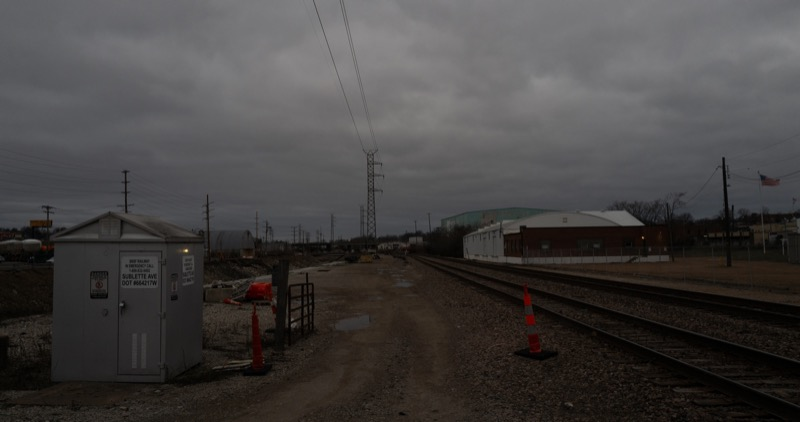
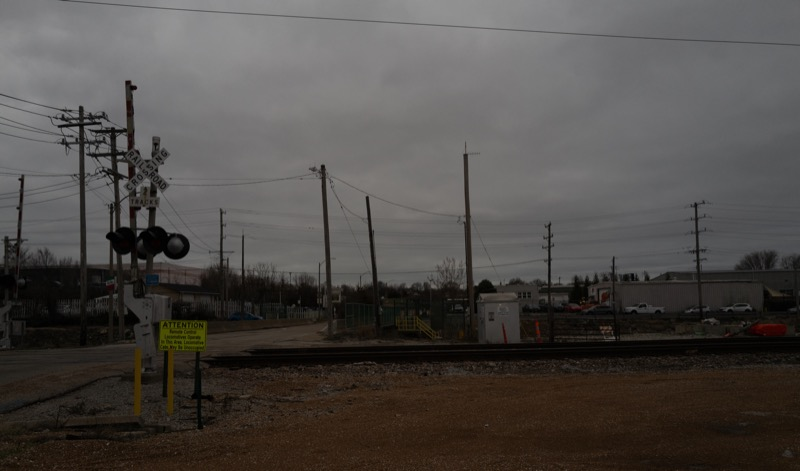
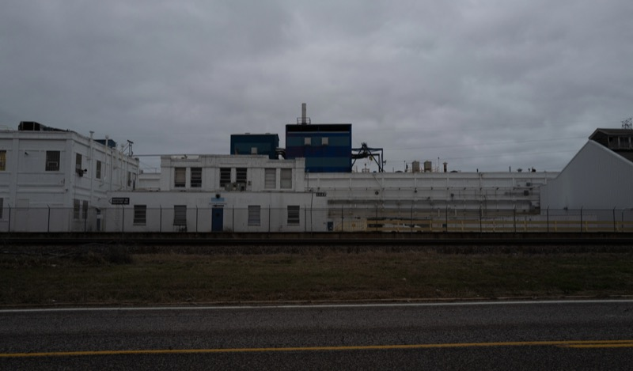
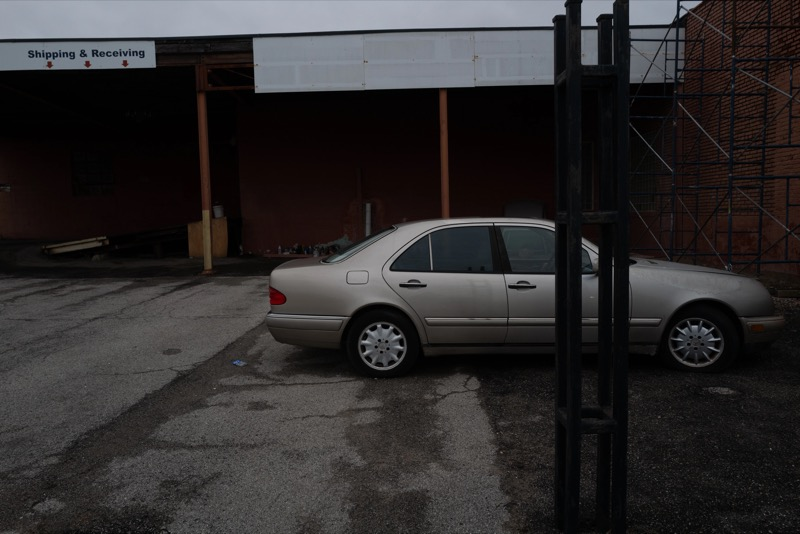
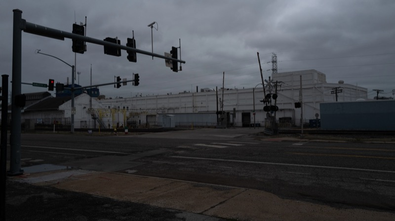
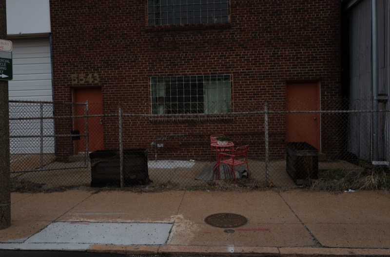
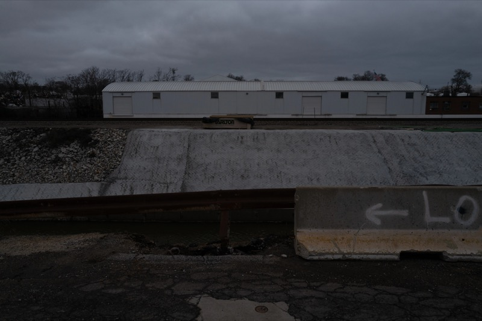
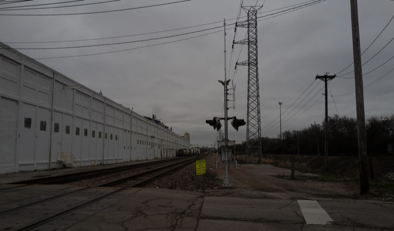
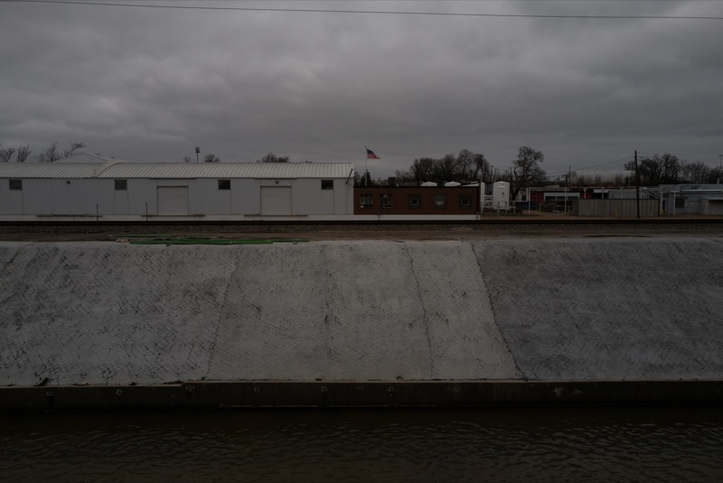
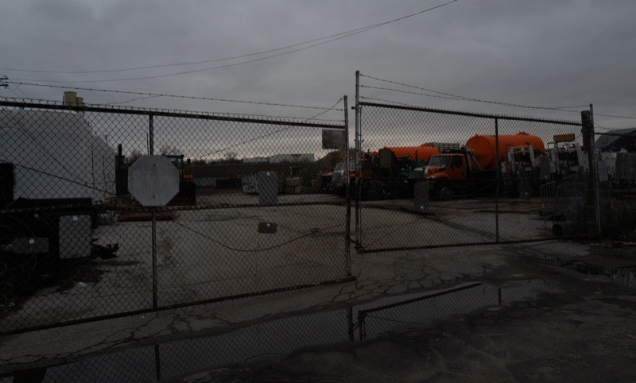
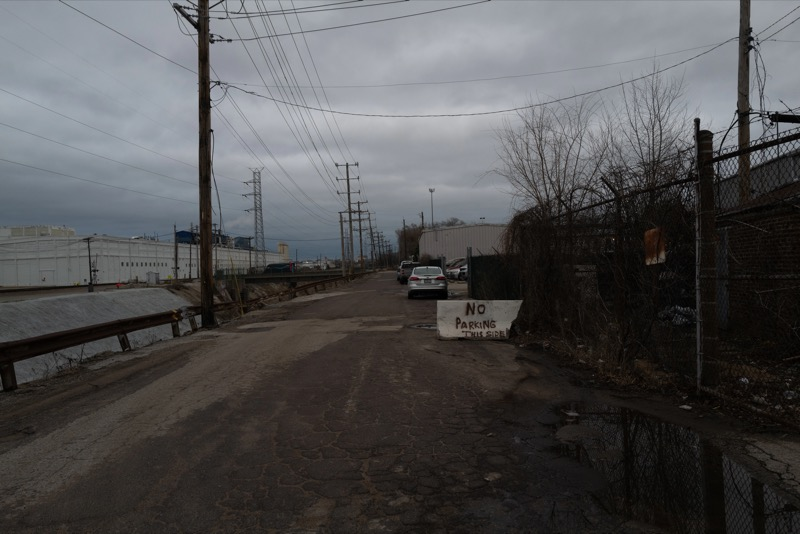
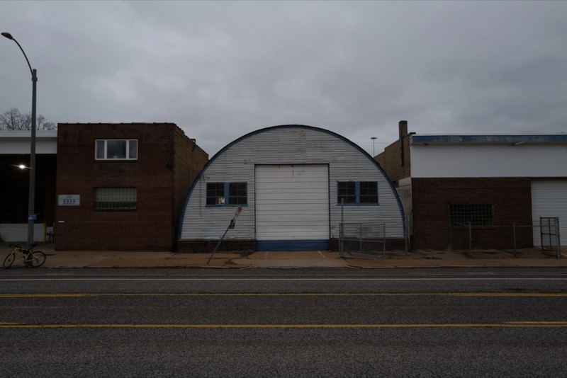
I often take the train from St. Louis to Chicago. The rides and the scenes along the railway tracks drew my interest so much that I did some more research on the history of the trail. The National Old Trails Road played an important role in St. Louis's development and American expansion. St. Louis was an industry town. The greenway transformed historical railways and continued their mission. I traveled to different railway sections and followed along the tracks to document local life. There was a steel plant near one section I traveled, showing a glimpse of the city's past.
Night Train
Einstein on the Beach (Concert Version, 2022): Ictus, Suzanne Vega, Collegium Vocale Gent & Tom De Cock
我昨晚夢見你了: 輕描淡寫
Song of the Highwire Shrimper: Tim Hecker